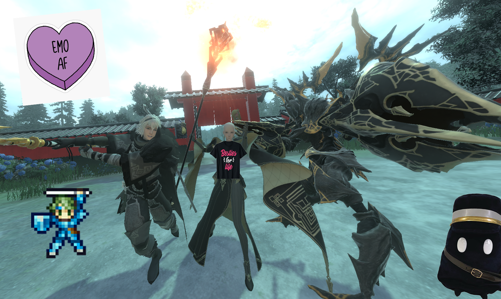

NieR Reincarnation - 642 hours remain
I just finished up The Girl and the Monster a little bit ago. And... man. It doesn't make love; it fucks. Hard. It's fucking morning, day, night, from the window to the wall. NieR Reincarnation's fucking the floor so hard it's fucking the basement ceiling. It's caused a noise complaint.
The whole of the first Arc is Homestuckian, really. It introduces 12 characters (née Trolls), individually, over a large series of Weapon Stories (née pages), and their stories occasionally intermingle, and some are introduced within others' stories, and some are a lot more forgettable than the others, and, I mean. It's the same picture.
A quick proof-of-concept:
Rion ☯ Feferi
Gayle ☯ Vriska
Dimos ☯ Tavros
Akeha ☯ Kanaya
Argo ☯ Eridan
063y ☯ Sollux
F66x ☯ Aradia
Lars ☯ Equius
Griff ☯ Nepeta
Noelle ☯ Terezi
Levania ☯ Karkat
Fio ☯ Gamzee
Anyways, uh. I really loved it. I loved the unique storytelling, I love the insane conclusion at the end, and I love, uh, everything it did. The worst part about the game truly is the dull combat; if it were only walking around the cage, and playing the memory sequences, then it'd be much better. Or, rather, if the combat was interactive!
And, having been playing NieR Reincarnation, I've really come to hate an inseparable part of it: the Gacha. It's everywhere, while also adding nothing. Balance is nonexistent, not only because of the immense EoS giveaway, but because you can roll insanely better characters in the gacha than what you're given. The gacha is extremely predatory, with extremely terrible rates and now-defunct criminal pricing. The presentation of the game, how it carries itself, how it expresses its thoughts and ideas, is so of NieR. Which is, I mean, the inverse of the kind of game that would have a Gacha system, and gameplay that revolves around the Gacha. And, thus, the combat — the part intrinsically Of The Gacha — is unfun, and un-NieR.
We gotta kill gambling! Death to gambling!
I think I've been up for too long, just maybe. I had a ketamine infusion about 14 hours ago (20mg), and voted for my county's school board seat #4 right after it (about 25% high on ketamine), so I've had a long day! I had a nice, long chat with Kip, Tristan, M@, Robbie, and Crank, all in VC, about a lotta stuff. I talked a shitton about NieR to M@ and Crank, while playing NieR Reincarnation, and it was good fun. M@ talked some DMing stuff to Kip. Crank played Dragon's Dogma 2. Robbie played Cult of the Lamb. Tristan played Balatro (Odd Toddler‼️). 'Twas a fun and beautiful night with some people I hold dear. Kip set up a Steam Family, which I'm now in with some of them, so. I can force my friends to play NieR Replicant ver.1.22474487139... and they've no excuse.

The 3 oomfies, and my beloved team, Brother Nier, F66x, and Levania 🥺💜
4/3/2024 5:17:05 AM CST